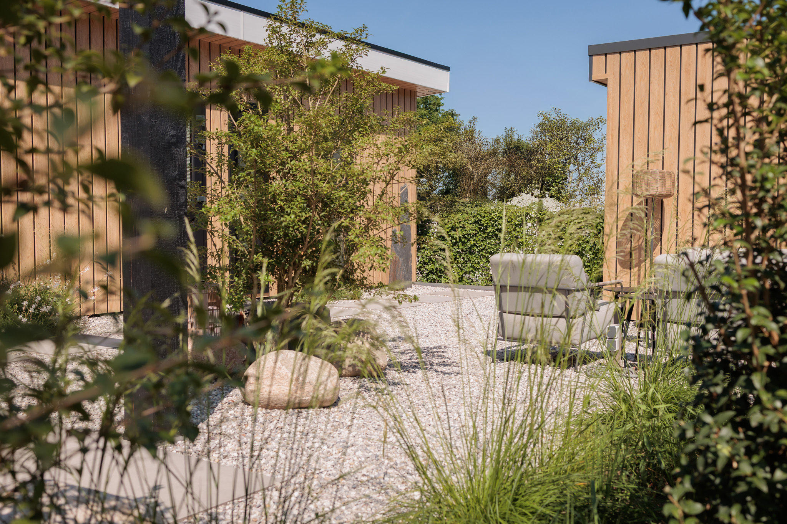

Droom jij ook van zo'n tuin waar je op een zonnige middag heerlijk wegzakt met een koud drankje? Waar je onder een fijne overkapping gewoon lekker buiten blijft als de avond wat frisser wordt? Of ben je iemand die het liefst zelf met de planten aan de slag gaat, maar de hulp van een professional kan gebruiken voor het ideale basisplan? Of misschien wil je gewoon iemand die even meedenkt over welke planten je het beste kunt kiezen?
Hoe je jouw tuin ook gebruikt, het moet een plek zijn om helemaal op te laden. Precies daarom maak ik ontwerpen die echt bij jou passen. Ik ga graag uitgebreid met je in gesprek, luister naar jouw ideeën en maak die tot een kloppend geheel.
Ik neem je graag het gepuzzel uit handen, want dat is precies wat ik leuk vind om te doen. Ik ontzorg je graag en maak een tuin waar je nog jarenlang blij van wordt.
Meer dan alleen een mooi plaatje · Echt maatwerk
Een goed tuinontwerp begint met luisteren. Hoe zie jij jezelf je tuin het liefst gebruiken? Welke sfeer spreekt je aan? En hoeveel tijd wil je straks eigenlijk aan het onderhoud besteden? Of je nu een knusse stadstuin hebt, een flinke achtertuin of een strakke kantoortuin — ik luister naar jouw wensen en maak een creatief en persoonlijk plan.
Bij mij vind je geen standaardoplossingen of copy-paste werk. Ik kom graag bij je langs om de locatie te bekijken, de uitdagingen te zien en al jouw ideeën op tafel te leggen. Op basis daarvan creëer ik een uniek en creatief tuinontwerp dat echt bij jou past.

Afhankelijk van wat jij prettig vindt, werk ik de plannen uit in 2D of 3D.
Perfect voor een praktisch overzicht van de indeling, materialen en beplanting.
Wil je al door je nieuwe tuin kunnen wandelen? Dan is een 3D-ontwerp een fantastische toevoeging. Het geeft je een levensechte impressie van de sfeer, de materialen en de hoogteverschillen.
Je tuin is er natuurlijk niet alleen voor die paar zonnige zomerdagen! Door slimme keuzes te maken in de indeling en beplanting, zorg ik voor een buitenruimte die er in alle seizoenen prachtig bij ligt.
Ik kom bij je langs! We bespreken jouw wensen en bekijken direct de mogelijkheden op locatie.
Ik ga aan de tekentafel zitten en vertaal jouw ideeën naar een creatief tuinontwerp en een kloppend beplantingsplan.
Tijd voor actie! Voor de aanleg werk ik graag samen met de vakmensen van Moerman Hoveniers, maar heb je zelf een partij in gedachten, dan sta ik daar uiteraard ook voor open.
Is de tuin klaar? Dan laat ik je niet zomaar los. Je krijgt van mij handig advies over het onderhoud, zodat je tuin er blijvend verzorgd uitziet.
De prijs van je ontwerp hangt af van de oppervlakte van je tuin.
Prijzen zijn exclusief btw.
Zullen we samen iets moois maken? Neem snel contact op — ik kijk ernaar uit!
Neem contact op